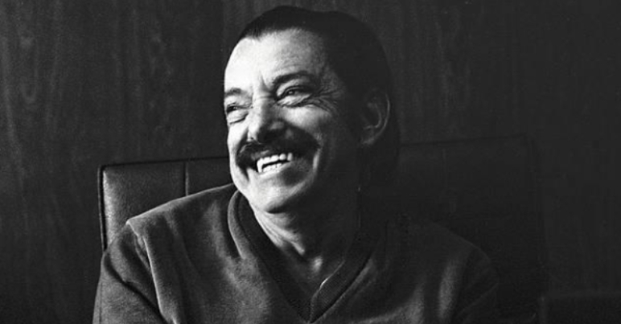
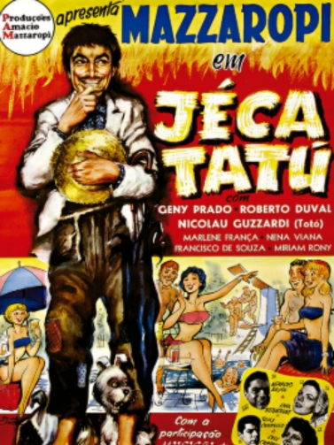
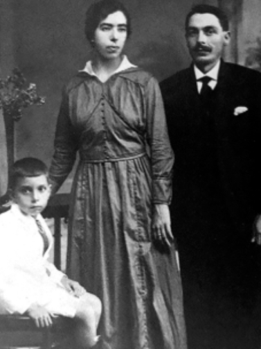

Nascido em 9 de abril de 1912, na cidade de São Paulo, Amácio Mazzaropi construiu uma das trajetórias mais marcantes do cinema e do humor popular brasileiro. Apesar da origem na capital, foi no interior paulista — especialmente em Taubaté e Tremembé — que encontrou as referências culturais que moldariam sua identidade artística. Desde a infância, Mazzaropi teve contato direto com manifestações populares, como o circo-teatro e as companhias itinerantes. Foi nesse ambiente que iniciou sua carreira, ainda jovem, integrando trupes mambembes e desenvolvendo um estilo de humor simples, acessível e profundamente ligado ao cotidiano do homem do campo. Ao longo da década de 1930, já mais experiente, ampliou sua atuação para os palcos teatrais e também para o rádio — um dos principais meios de comunicação da época. Seu talento em criar personagens carismáticos garantiu reconhecimento do público, sobretudo com figuras caipiras que, ao mesmo tempo em que divertiam, valorizavam a cultura rural brasileira. Com uma linguagem direta e popular, Mazzaropi transformou a simplicidade em sua maior força, consolidando-se como um dos artistas mais queridos.

O LEGADO DE UM GRANDE ARTISTA NO CINEMA BRASILEIRO
Amácio Mazzaropi consolidou-se como uma das figuras mais importantes da história do cinema nacional ao aproximar o público brasileiro das produções do próprio país. Em um período marcado pela forte presença de filmes estrangeiros nas salas de exibição, o artista conseguiu atrair multidões e demonstrar que o Brasil também era capaz de produzir grandes sucessos de bilheteria.
Outro ponto de destaque em sua trajetória foi a valorização da cultura brasileira. Em seus filmes, Mazzaropi retratava costumes do interior, tradições familiares, formas de linguagem e situações cotidianas que dialogavam diretamente com a realidade de milhões de brasileiros. Ao transformar esses elementos em entretenimento, contribuiu para preservar e difundir aspectos da identidade cultural do país ao longo de diferentes gerações.
Além de seu talento como ator, Mazzaropi também exerceu papel relevante como produtor e empresário. Ao fundar sua própria produtora cinematográfica, mostrou que era possível desenvolver projetos com autonomia e visão de mercado dentro do Brasil. Sua iniciativa abriu caminhos para outros profissionais do setor e reforçou a importância de investir na indústria cinematográfica nacional.
Décadas após o auge de sua carreira, o legado de Mazzaropi permanece vivo. Seus filmes continuam sendo exibidos, estudados e reconhecidos como parte fundamental da cultura brasileira. Mais do que provocar o riso, o artista contribuiu para o fortalecimento do cinema nacional e evidenciou que histórias genuinamente brasileiras possuem valor, força e permanência na memória do público.
Sua influência também pode ser percebida em novas gerações de artistas e cineastas, que passaram a valorizar narrativas mais próximas da realidade do país. Dessa forma, Mazzaropi não apenas marcou sua época, mas também ajudou a construir e fortalecer a identidade do cinema brasileiro.
CURIOSIDADES QUE MARCARAM A HISTÓRIA DE MAZZAROPI
A trajetória de Amácio Mazzaropi vai além da atuação e revela aspectos curiosos que ajudam a entender a dimensão de sua importância no cinema brasileiro. Um dos fatos mais marcantes é que ele não se limitava aos palcos ou às telas: também atuava como produtor, roteirista e empresário. Envolvido diretamente nas decisões de seus filmes, Mazzaropi demonstrava dedicação e visão estratégica, fatores que contribuíram para transformar seu nome em uma das marcas mais fortes do entretenimento nacional.
Outra curiosidade relevante está no impacto de seu personagem mais famoso, o caipira conhecido em todo o país. Mais do que uma figura cômica, esse personagem — popularmente associado ao Jeca Tatu — tornou-se um símbolo da cultura popular brasileira. Com linguagem simples, trejeitos característicos e situações bem-humoradas, representava o cotidiano do interior e conquistava públicos de diferentes idades e regiões.
Apesar do enorme sucesso de bilheteria, Mazzaropi nem sempre foi reconhecido pela crítica especializada durante sua carreira. Ainda assim, manteve o apoio fiel do público, que continuava a lotar os cinemas para assistir às suas produções. Com o passar do tempo, sua relevância artística e cultural passou a ser cada vez mais reconhecida por estudiosos e críticos.
Após sua morte, o legado do artista permaneceu vivo por meio de reprises, pesquisas acadêmicas e homenagens. Seus filmes continuam sendo exibidos e redescobertos por novas gerações, consolidando sua trajetória como essencial para compreender a história do cinema e do entretenimento no Brasil.
Mesmo décadas após o auge de sua carreira, Mazzaropi segue como referência. Seu estilo único de humor ainda é admirado, e sua imagem permanece associada à simplicidade, ao talento e à valorização das raízes culturais brasileiras.
A SABEDORIA POR TRÁS DO HUMOR DE MAZZAROPI
A frase “Eu sou caipira, mas num sou bobo!” sintetiza com precisão a essência dos personagens interpretados por Amácio Mazzaropi ao longo de sua carreira. Em suas produções, o artista frequentemente dava vida a homens simples do interior, muitas vezes subestimados por outros personagens. No entanto, ao longo das narrativas, essas figuras revelavam inteligência, astúcia e habilidade para enfrentar e superar desafios.
Mais do que um recurso de humor, a expressão carrega uma crítica social relevante. Por meio de seus filmes, Mazzaropi evidenciava que a aparência humilde ou a forma de falar não determinam a capacidade intelectual de uma pessoa. Assim, seus personagens contribuíam para questionar preconceitos e reforçar a ideia de que sabedoria e dignidade podem estar presentes em diferentes contextos sociais.
UMA MENSAGEM QUE ATRAVESSA GERAÇÕES
Décadas após sua popularização, a frase permanece atual e significativa. O ensinamento implícito reforça que ninguém deve ser julgado por sua origem, aparência ou modo de expressão — uma reflexão que continua pertinente na sociedade contemporânea.
A expressão também se consolidou como símbolo do legado deixado por Mazzaropi. Ao unir humor e autenticidade, o artista valorizou o homem do campo e a cultura popular brasileira, transformando uma fala simples em uma mensagem duradoura, capaz de dialogar com diferentes gerações e manter viva sua relevância cultural.


Não apenas ter interpretado o personagem Jeca Tatu, criado por Monteiro Lobato, para representar o caipira paulista. Amácio Mazzaropi é prestigiado pela cultura taubateana. A Escola Estadual Amácio Mazzaropi, localizada na Rua Paulo Setúbal, 502, Vila São José, funciona no modelo do Programa Ensino Integral (PEI), desde de 2022 e com jornada de 7 horas. A escola busca desenvolver o protagonismo juvenil, a autonomia e o projeto de vida dos estudantes, inspirando-se nos valores deixados por Mazzaropi e pode ser considerada uma escola modelo na rede estadual.